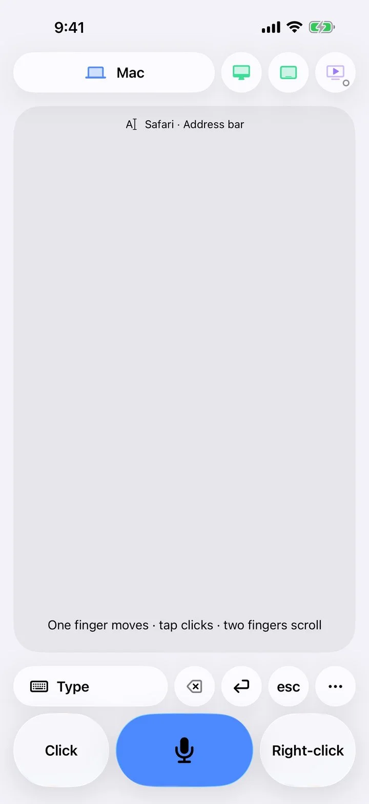
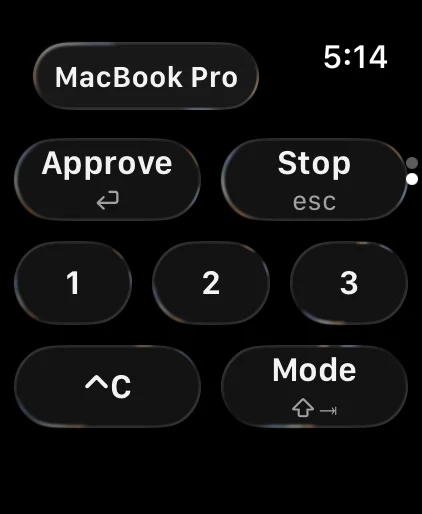
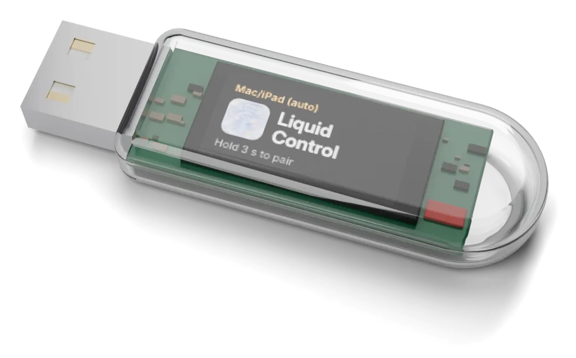
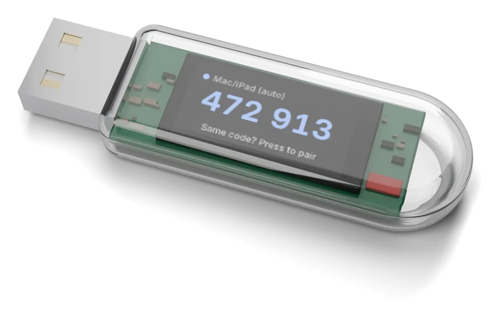
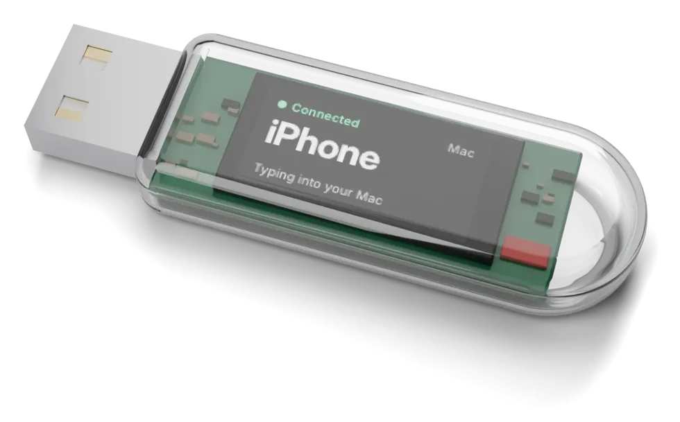
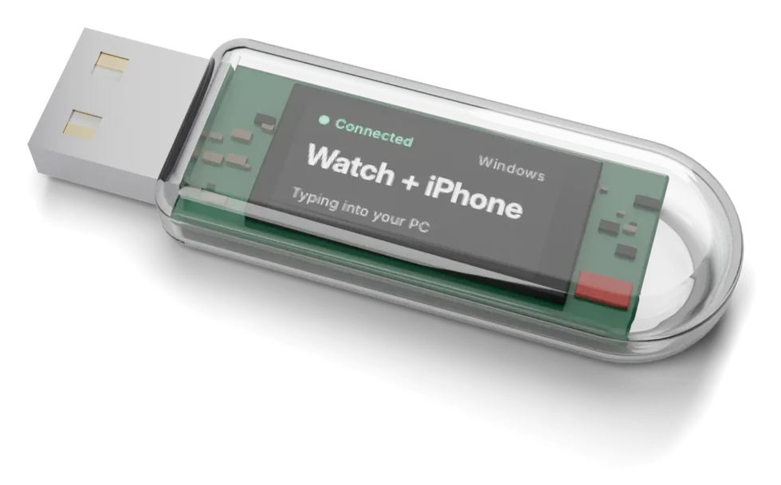

Type, or just talk
Type a line on your phone and it lands where you’re working. Or hold the mic and speak: your phone turns it into text on the device itself and types it for you. Save code words for phrases you use all the time.
Free beta for iPhone, Apple Watch and Android
It’s your phone, so it’s never lost in the couch. Hold the mic and talk instead of typing, and tap the bar at the top to move from the laptop to the TV.
Macs, PCs and iPads need nothing installed, because they pair over Bluetooth like a keyboard.


Drag on the trackpad, type, or hold the mic. Tap TV at the top of the phone to switch to the TV.
Type a line on your phone and it lands where you’re working. Or hold the mic and speak: your phone turns it into text on the device itself and types it for you. Save code words for phrases you use all the time.
Pick a password from your iPhone’s Passwords and Liquid Control types it into the computer or tablet you chose. It’s never stored, shown or logged.
iPhoneThe Apple Watch app has the trackpad, the mic, a TV remote and big keys for coding agents: approve, stop, or pick an option without getting up.
What you type and say goes to the device you’re controlling, over Bluetooth or your home Wi-Fi, and never to us. There’s no account, and the app collects nothing.
Each device gets its own keys: ⌘ on a Mac, Start on Windows, Back and Home on a TV.
Mac, Windows, Linux and ChromeOS
Your phone pairs over Bluetooth as a keyboard and mouse, so there’s nothing to install.
iPad, and Android tablets and phones
They pair over Bluetooth the same way. Some Android devices don’t list Liquid Control, and those can’t be added yet.
Google TV, Android TV, Roku, LG webOS and Samsung
Your phone finds them on your Wi-Fi. Any other TV that takes a Bluetooth keyboard pairs over Bluetooth.
Sonos and Google Cast
Play, pause, skip and change the volume over your Wi-Fi, from the iPhone for now.
Older TVs, game consoles, locked-down PCs
Plug in the Stick and it types what your phone sends. It’s on pre-order, and its delivery depends on FCC equipment authorization.




Pre-order
A small USB receiver for computers that can’t pair over Bluetooth. Plug it in, and it types what your phone sends as a USB keyboard and mouse.
Its firmware is written, but it hasn’t run on a Stick yet, so how it pairs may still change before it ships.
Pre-orders and the FCC: The Stick is subject to the FCC’s rules, and delivery depends on it completing FCC equipment authorization: nothing ships before then. FCC rules don’t address consumer protection, contract or other federal or state law, which still apply to your order. If authorization isn’t granted, every pre-order is refunded in full, and you can cancel yours for a full refund any time before it ships.
$34.99 plus sales tax, up to 5 an order, US addresses only, free shipping; it ships in February 2027. You’re charged in full when you order: Stripe takes the payment, and your receipt and card statement show Kaizenedu.net. To cancel, reply to your receipt. Not ready to pay? Get notified instead: a short form on GitHub, where your GitHub name is public.
Free, in public beta. Start with your phone, then add your devices from the app.